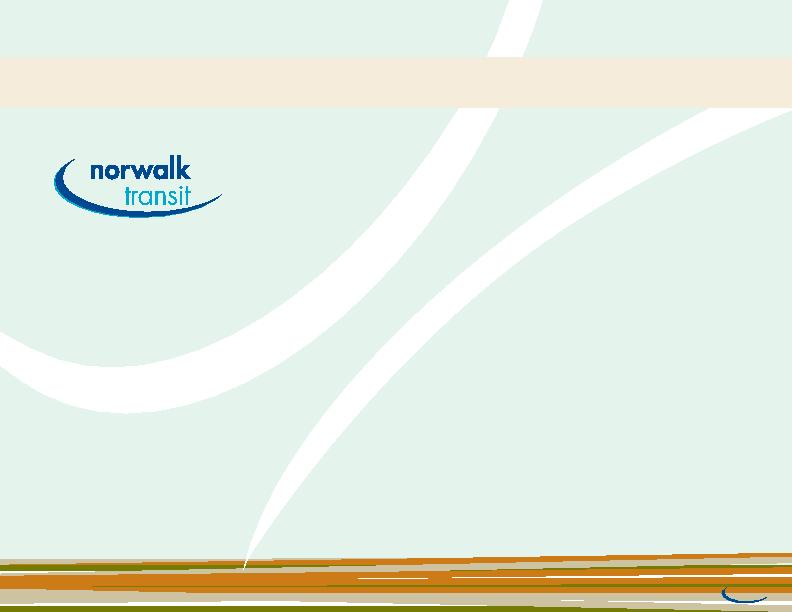

|

including; education, health care, employment, and training. in the past year, over two and a half million riders relied on nts to provide a safe and comfortable ride to their destination. We are able to make this commitment to quality service through our family of 150 nts employees, many who have serviced us faithfully for as long as 33 years, (providing equipment maintenance, dispatching, customer service, training and administrative services). of Artesia, Bellflower, cerritos, la habra, la mirada, norwalk, Whittier and santa Fe springs and unincorporated areas of l.A. county. Dial-A-ride vans, providing paratransit annual trips, provide our community a variety of mobility options. senior citizens, students, and commuters from all walks of life, have the opportunity to access these services seven days a week, 365 days a year. We do this with one of the lowest base fares in the industry (only 60 cents) so that cost does not prohibit access. maintaining our fleet of buses, and vans. We pride ourselves on being environmentally sensitive. We are the only city in california using two types of alternative fuel hybrid electric technology vehicles. |